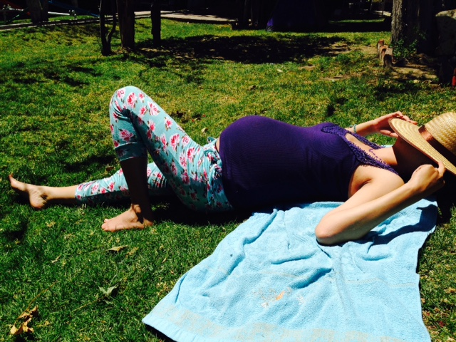
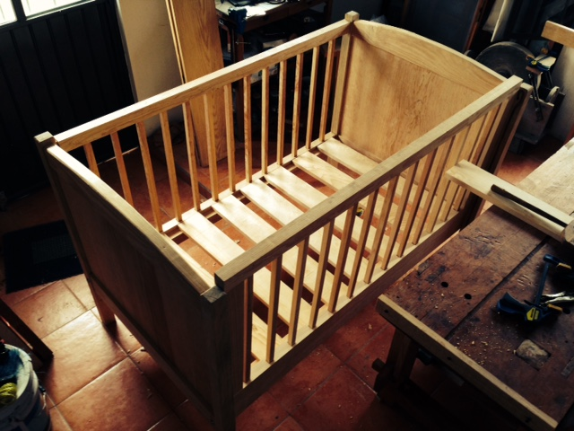

How to build a baby crib
With the help of a real-life hacker
A year ago while my wife was pregnant of my very first baby girl, I decided to build something special with my own hands for Naia, so I thought to build an small craddle, it seemed like an small project but I did not have any experience working with wood, I have to admit, it did sound crazy even for me, but possible.. why not?..
I started looking on internet in too many DIY (Do It Yourself) sites, woodworking for newbies, and also bought a e-book on amazon, finally I ended up with a couple of woodworking plans that seemed reasonable to my poor skills.


Of course I couldn't build it by myself on my little space at home and no skills, So I threw an email to one of the most respectable and creative hacker nowadays, my friend Federico Mena Quintero, who has a passion for woodworking and a place to do it.
To people that haven't hear before about Federico, he is one of the most brilliant persons I have met, he has contributed with Opensource in so many levels an he is always trying to help the community, Let's say he should be in the "hall of fame" of the OpenSource history, besides that he is a young guy with a really lovely family.
Couple of days later I got Federico response, saying that he will be able to help me out with my "little" project!!! and we started some day back in Jan 2014, basically reviewing the woodworking plans and the options we had, Federico suggested me to "Go big" , he is also a father and knows the business of kids growing very fast, so we decided to build an actual crib that Naia can use at least until she turns six, and maybe can be passed on subsequent children, and then on and on throughout the family.
So we went out to the local wood place and got all we needed.
We started sanding pretty much everything by hand, no electric weapons were used to sand the wood.
Then we continue with front and end panels assembled
While the panels were glued, we worked on the legs, cutting the leg mortises for the end rails, and routing the shepperd's hook grooves.
Then the lower back and front rails, and build the tenons to perfect assembly the crib, this is more likely artesan work
And we continue with the upper rails, more hand work :)
And that was a weekend work, So I asked my manager to work remotly for a couple of weeks, because Federico lives in Xalapa, (my hometown) and I'm working and living in Puebla, Then I worked remotly from 9-5 from Federico's office, and after my regular work I could work on the crib, it was hard but is always fun to learn new things.
We are making progres !!!
We assembled legs to lower/upper end rails.
The panels are really good looking !
This one was hard,and required time to get the job and the shepherd hook done.
And more artesanal work ..... having a great time with Luciana and Federico

I have to say this one was one of my favourite part of building a crib, I got skills by then.. at least some, slats were challenging but not that hard, I'd say they were sized, glued and perfectly fit on the first try !... well on second try, but maybe on the third one.
In the meantime mommy and Naia resting.... it was kind of a race, running out of time
Putting all togheter
And finally we were finishing the crib!..
As you can read, you will need perseverance and a lot to motivation to work in a project like this, and of course a friend like Federico with a lot of patience, (he also spent time to show me how to prepare good Sushi and Capuchinos)
I'm deeply thankful to had the oportunity to work on this and build something special for my baby.
Here are the final results, my little one having fun with daddy !
What can I say ? , it really feels great.
If you want to check out the Woodworkings plans and/or the cutting list used, please feel free to shoot me an email
yazpik@gmail.com